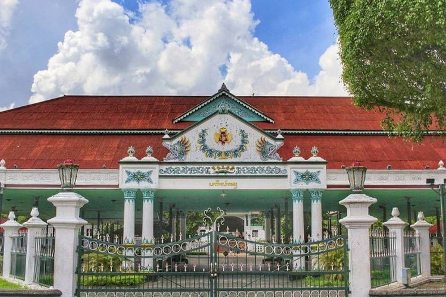
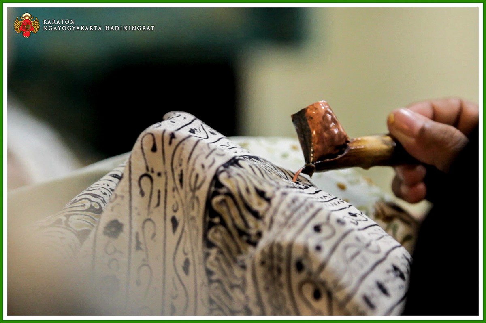
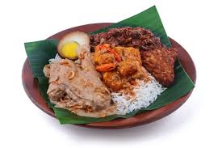
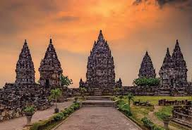
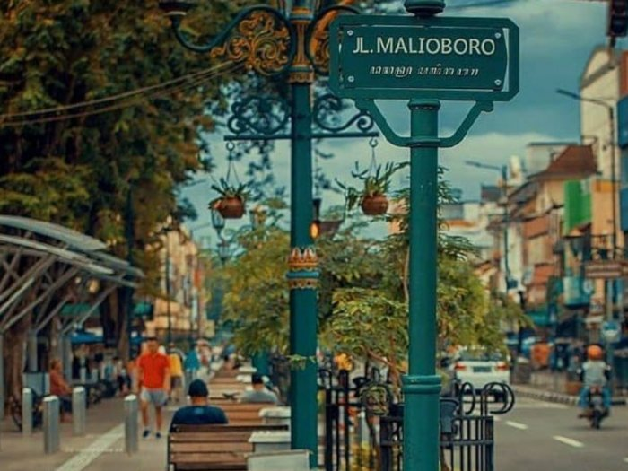

Sejarah

Yogyakarta memiliki sejarah panjang sebagai pusat kebudayaan dan
politik Jawa. Berdiri pada tahun 1755, Kesultanan Yogyakarta
didirikan setelah Perjanjian Giyanti, dengan Sultan Hamengkubuwono I
sebagai raja pertamanya. Yogyakarta menjadi pusat kekuasaan Jawa dan
berkembang sebagai wilayah yang penting dalam peradaban Jawa. Pada
masa Revolusi Kemerdekaan Indonesia, Yogyakarta menjadi ibu kota
sementara Indonesia dari 1946 hingga 1949. Peran penting kota ini
dalam perjuangan kemerdekaan menjadikannya daerah yang istimewa
dengan status otonomi khusus, di mana Sultan berperan sebagai
gubernur. Hingga kini, Yogyakarta dikenal sebagai pusat budaya dan
pendidikan di Indonesia.
Di era modern, Yogyakarta terus beradaptasi sambil mempertahankan
warisan budayanya. Sebagai "Kota Pelajar," kota ini menarik ribuan
mahasiswa dan rutin menggelar acara seni serta festival budaya.
Dengan pemandangan indah dan keramahan warganya, Yogyakarta tetap
menjadi destinasi menarik untuk mengeksplorasi budaya Indonesia.
Budaya

Budaya Yogyakarta kaya dan beragam, mencerminkan tradisi Jawa yang
mendalam. Kota ini terkenal dengan kesenian seperti wayang kulit,
gamelan, dan batik. Pertunjukan seni dan acara budaya sering
diadakan, menjaga warisan ini tetap hidup di kalangan masyarakat.
Upacara adat, seperti Grebeg, juga menjadi bagian penting dari
kehidupan sehari-hari, memperkuat identitas budaya kota ini.
Selain seni dan tradisi, Yogyakarta juga dikenal sebagai pusat
pendidikan dan kreativitas. Banyak seniman dan pengrajin tinggal di
sini, menciptakan karya yang menggabungkan elemen tradisional dan
modern. Kehadiran mahasiswa dari berbagai daerah menambah dinamika
budaya, menjadikan kota ini tempat yang terus berkembang, di mana
inovasi dan tradisi berjalan beriringan.
Kuliner

Kuliner Yogyakarta terkenal dengan keanekaragamannya yang menggugah
selera, seperti Gudeg, Sate Klathak, dan Bakpia. Pengalaman kuliner
di kota ini sangat menarik dan menggoda.
Malioboro sebagai pusat kuliner menawarkan hidangan lezat seperti
Nasi Goreng Jawa dan Ayam Penyet, serta jajanan tradisional seperti
Klepon dan Serabi. Suasana yang hidup menambah kenikmatan menikmati
hidangan khas Yogyakarta.
Wisata
Yogyakarta menawarkan beragam destinasi wisata menarik, seperti
candi Borobudur dan Prambanan, serta keindahan alam Gunung Merapi.
Malioboro dengan kuliner khasnya adalah tempat yang wajib
dikunjungi, sementara Taman Sari dan Keraton Yogyakarta memberikan
wawasan tentang sejarah dan budaya. Wisatawan juga dapat menikmati
pemandangan indah di Pantai Parangtritis.
Candi Prambanan

Candi Prambanan adalah kompleks candi Hindu terbesar di Indonesia,
dibangun pada abad ke-9 dan diakui sebagai Situs Warisan Dunia
UNESCO. Candi ini terkenal dengan arsitektur megahnya dan relief
yang menggambarkan kisah Ramayana serta Bhagavata Purana, menarik
banyak wisatawan setiap tahun.
Malioboro

Malioboro, di sisi lain, adalah jalan ikonik di Yogyakarta yang
terkenal dengan keramaian dan suasana hidupnya. Dipenuhi oleh
toko-toko, pasar, dan pedagang kaki lima yang menawarkan berbagai
kerajinan, batik, serta kuliner khas Yogyakarta, Malioboro menjadi
pusat aktivitas dan destinasi favorit bagi wisatawan dan penduduk
lokal.